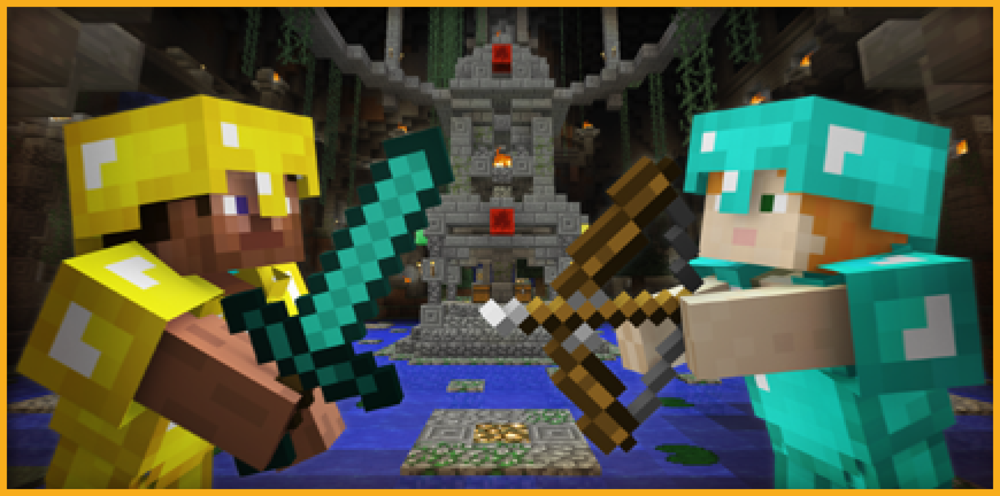
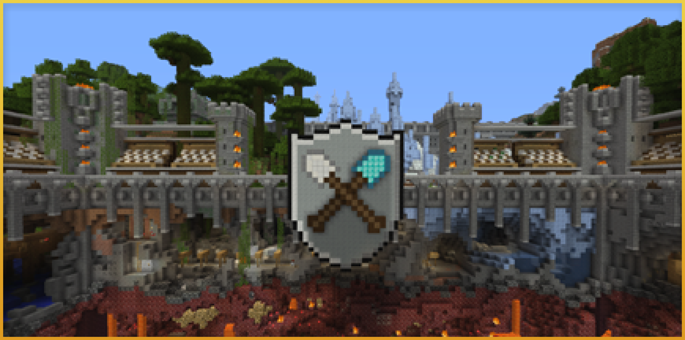
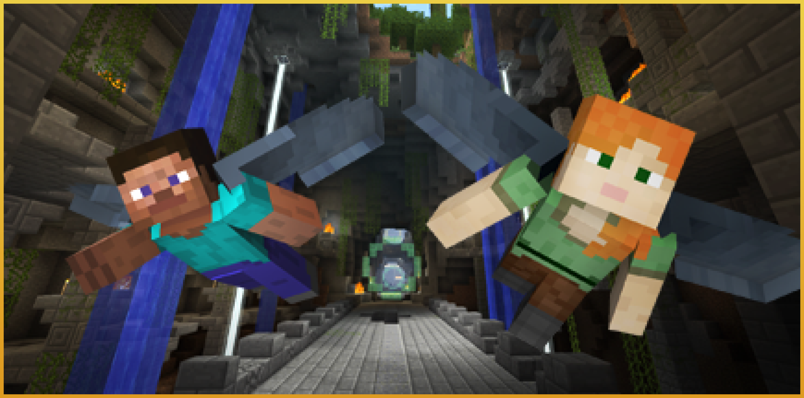

Minecraft: Nintendo Switch Editionとは？
2017年5月12日に配信開始となったMinecraft: Legacy Console Edition のSwitch版である。
2018年6月21日に配信が終了し、現在は2017年~2018年の間に購入していた者でしかプレイすることは不可能となっている。
現在は主にShop-PvPやRPG、Speed Gappleなどが主に遊ばれている。
遊べる要素
ミニゲームやPvP、独自のRPGサーバーがあり、
プレイヤー達によって楽しみ方の異なる
ワールドが存在している。
特にSwitch版ではAquatic Updateが来なかったため、
他のEditionと比べて遊びの幅が狭くなっているが、
プレイヤーの工夫で様々な遊びを再現している。
ミニゲーム

「バトル」
プレイヤー同士で戦い、アイテムをチェストから入手し、アイテムを駆使して戦う。
シンプルながら戦略性が高く、多方面の実力が問われるゲームである。

「転落」
他プレイヤーの立っているブロックを破壊し、アリーナ下部の溶岩へ落とすゲーム。
アリーナ上ではTNTなどの罠もあるので気を付けなければならない。

「グライド」
ゴール時間の速さを競うタイムアタックと、コースに設置された輪を通過してスコアを競うスコアアタックというモードが存在する。
グライド特有の技やショートカットが存在するので競技性が高い。